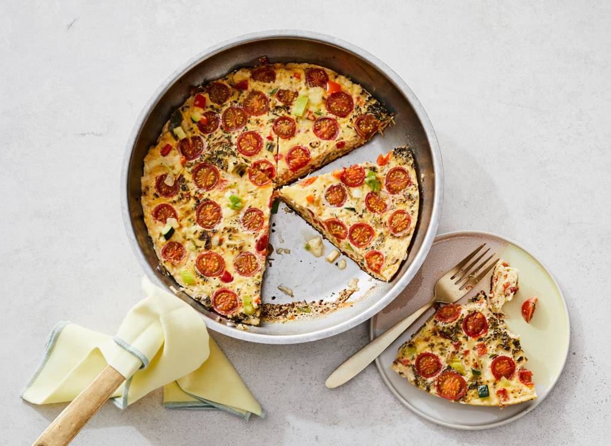
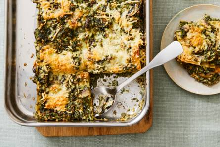
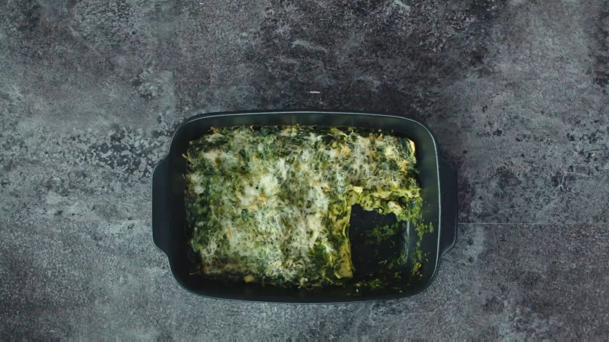
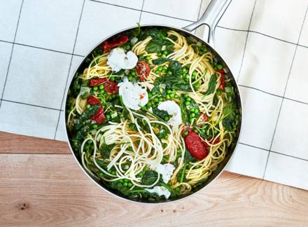
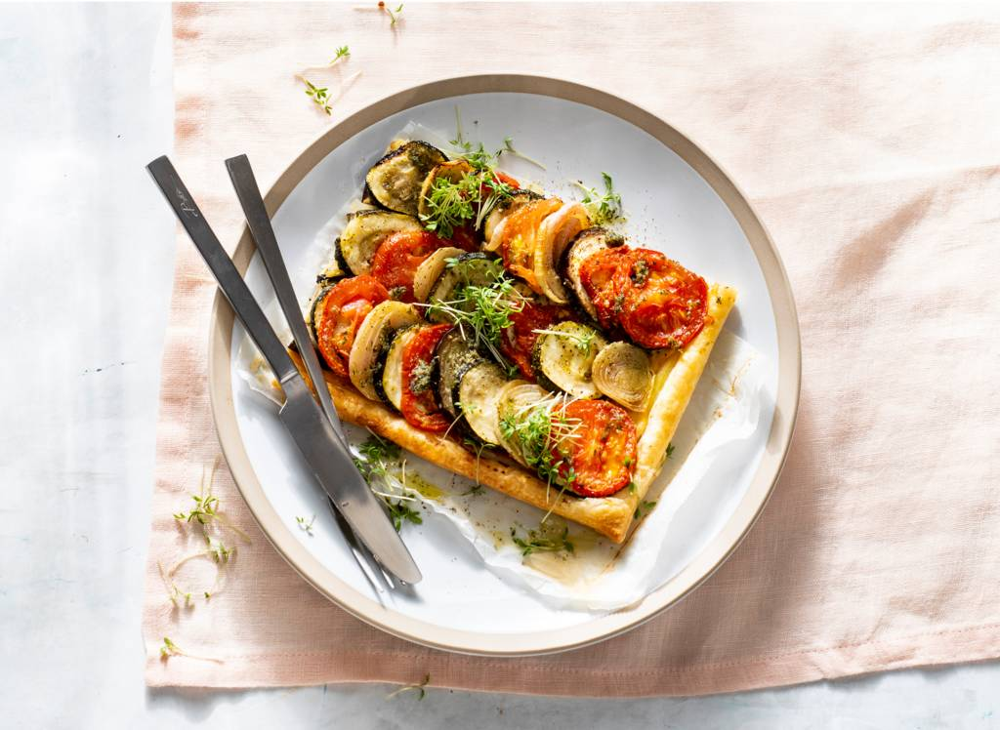
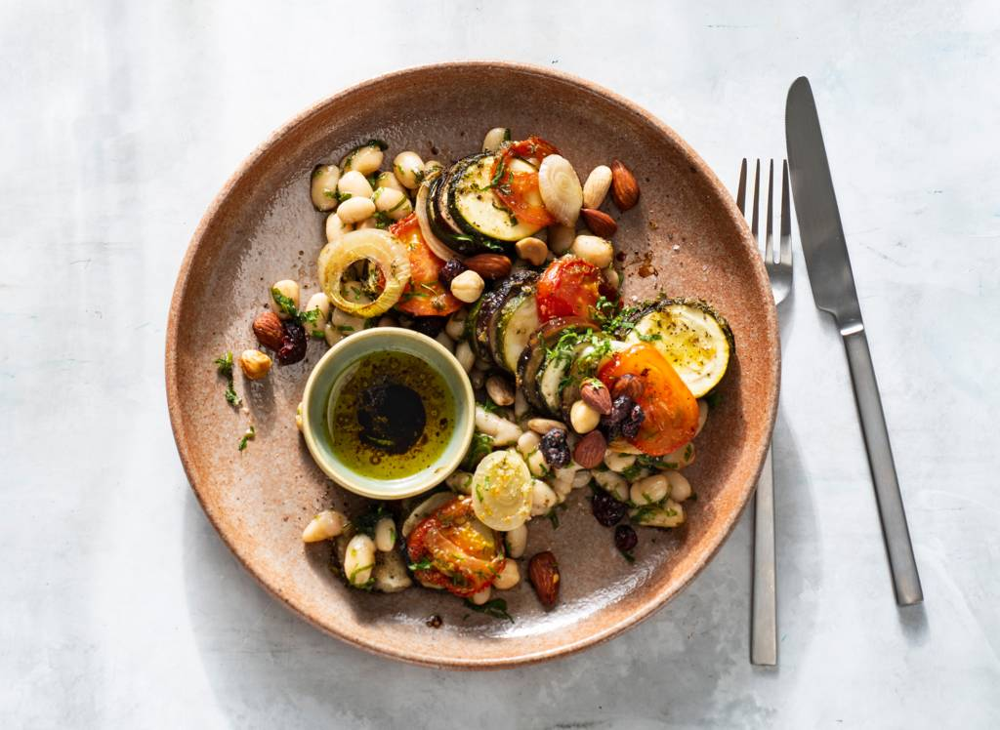

Vind makkelijk het beste recept
 Bekijk alle recepten->Wat eten we vandaag?
Gezond & budgetproof
Volkorenlasagne met spinazie en linzen
Weekendschotel
Receptvideo --- 00:22
Makkelijke lasagne met spizanie
Handig: 1x koken, 2x eten
Het is simpel, je maakt 1 basisrecept en daarmee kook je 2 keer iets anders. Praktisch en lekker! Van soep tot curry en van pasta tot plaattaart. Een paar voorbeelden: Maak van geroosterde groenten 1x een hartige plaattaart en 1x een maaltijdsalade Of gebruik kruidig gehakt voor een dagje pasta en gevulde pizzabroodjes.
Nu in het magazine
We gaan weer naar school en aan het werk. En om het ontspannen zomergevoel lang vast te houden, is het motto voor doordeweekse dagen: snel, slim en simpel! Van goedgevulde broodtrommels tot in een handomdraai het avondeten op tafel. Kijk maar eens naar al het lekkers in Allerhande deze maand.
- Alle recepten
- Bekijk het magazine online
- AH Gezond & fit
- 1x koken, 2x eten
- Eenpansgerechten, traybakes & wokgerechten
- Broodtrommels
Zin in stamp!
20 min 680kchl 4
Roomige eenpanspasta met groenten en buffelmozzarella
Recept
Geroosterde groenten (bayaldi)
Recept
Plaattaart met geroosterde groenten en geitenkaas
Recept
Salade van geroosterde groenten met kruiden en noten
Nu in het magzine
- Alles uit het magazine
- Bekijk het magazine online
- Gezond en budgetproof weekmenu
- Broodtrommel
- Havermout
- 1x koken, 2 eten
- Eenpansgerechten
- Traybakes
- Wokrecepten
- Eiwitrijke voeding
Voor doordeweeks
- Wat eten we vandaag?
- Snelle recepten
- 5-ingredienten
- Gezonde recepten
- Budgetrecepten
Nu populair
- Curry
- Gevulde courgette
- Ovenschotels
- Pasta
- Risotto